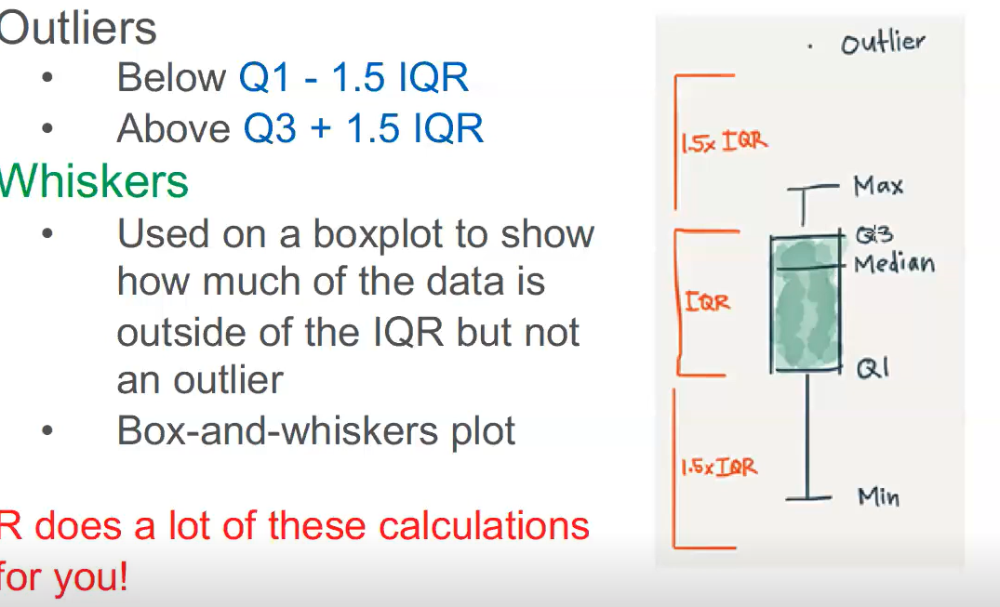

箱线图
绘制步骤
1、画数轴，度量单位大小和数据批的单位一致，起点比最小值稍小，长度比该数据批的全距稍长。
2、画一个矩形盒，两端边的位置分别对应数据批的上下四分位数（Q3和Q1）。在矩形盒内部中位数（Xm）位置画一
条线段为中位线。
3、在Q3+1.5IQR和Q1－1.5IQR处画两条与中位线一样的线段，这两条线段为异常值截断点，称其为内限；在Q3
+3IQR和Q1－3IQR处画两条线段，称其为外限。处于内限以外位置的点表示的数据都是异常值，其中在内限与外限
之间的异常值为温和的异常值（mild outliers），在外限以外的为极端的异常值(extreme outliers)。
四分位距IQR=Q3-Q1。
4、从矩形盒两端边向外各画一条线段直到不是异常值的最远点，表示该批数据正常值的分布区间。
5、用“〇”标出温和的异常值，用“*”标出极端的异常值。相同值的数据点并列标出在同一数据线位置上，不同值的数据点标在不同数据线位置上。至此一批数据的箱形图便绘出了。统计软件绘制的箱形图一般没有标出内限和外限。
补充
1.上限：
上限是非异常范围内的最大值。
首先要知道什么是四分位距如何计算的？
四分位距IQR=Q3-Q1，那么上限=Q3+1.5IQR
2.下限
下限是非异常范围内的最小值。
下限=Q1-1.5IQR
